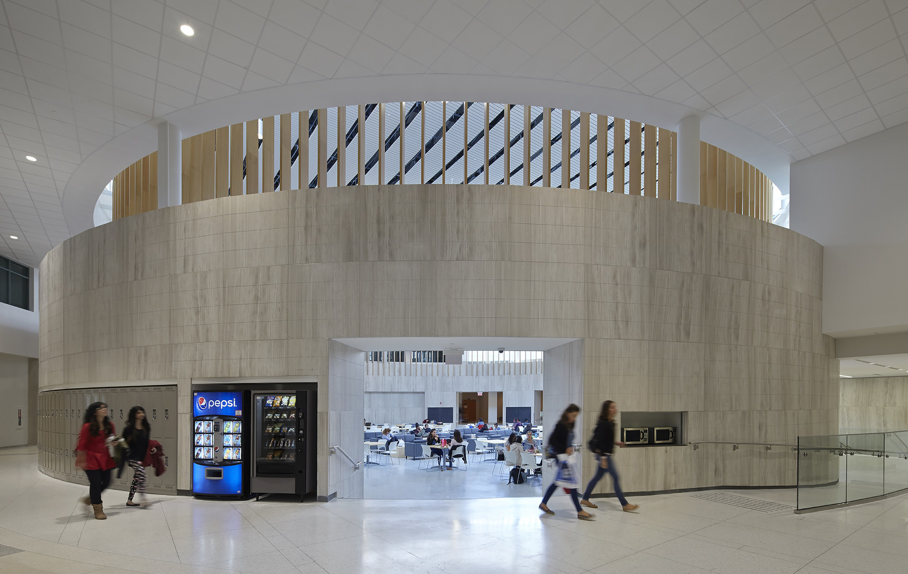

The Office of the Registrar
Project Communications Assistant Intern · University of Toronto Mississauga
The Office of the Registrar is part of the higher-education administration sector, specifically student services. Its purpose is to support undergraduate students with:
- Enrolment & registration
- Academic advising & degree planning
- Financial aid, scholarships, and awards
- Tuition and financial planning
- Course enrolment support & program selection
- Transcripts, documentation, and academic record management
- Final exams & accommodations coordination
- Convocation preparation
Project Communications Intern – Office of the Registrar, University of Toronto Mississauga
In this role, I operated at the intersection of research, UX, communications, and institutional systems, supporting one of UTM's most student-facing administrative units. My work focused on improving how critical academic information—registration, enrolment, tuition, and advising—is communicated to students across digital platforms.
I collaborated with communications staff, designers, and administrative stakeholders while independently owning major research and redesign initiatives. I was trusted to analyze existing systems, identify gaps, and propose strategic, student-centred improvements that aligned with institutional standards and branding.
Research, Strategy & Analysis
I conducted comparative research across UTM, UTSC, and UTSG websites, evaluating layout structure, navigation clarity, accessibility, tone, and consistency. This informed a detailed evaluation of the Fall/Winter Registration Guide, where I identified strengths, usability issues, and opportunities for improvement.
Web Redesign & Digital Prototyping
Building on my research, I redesigned the Fall/Winter Registration Guide as a high-fidelity Figma prototype. My redesign focused on improving visual hierarchy and scannability, structuring content into clear logical sections, introducing collapsible components to reduce cognitive overload, and ensuring consistency with Registrar branding and accessibility standards.
I also developed a one-page referral flyer concept and a cross-campus comparison table highlighting best practices in student-facing design across U of T campuses.
Communications & Multimedia Creation
In addition to web and UX work, I supported communications initiatives by producing multimedia content for student outreach. This included filming and editing an on-campus Program Selection Instagram reel, writing scripts, storyboards, and shot lists, designing a Student Testimonial Proposal, and capturing photography at events, open houses, and student programs.
My work contributed to clearer, more accessible student communication around some of the most complex and stressful parts of the academic experience. By identifying friction points and redesigning key resources, I helped surface opportunities to reduce confusion, improve navigation, and humanize institutional messaging.
This internship accelerated my personal and professional growth in meaningful ways.
- How to translate complex systems into student-friendly experiences
- How to present and defend design decisions to diverse stakeholders
- How to manage ambiguity, ask the right questions, and create structure where none exists
- Leadership experience managing and delegating tasks to two interns
- Stronger confidence in cross-functional collaboration and public speaking
Most importantly, I learned how to think strategically while executing thoughtfully, a skill I carry into every project I take on.


